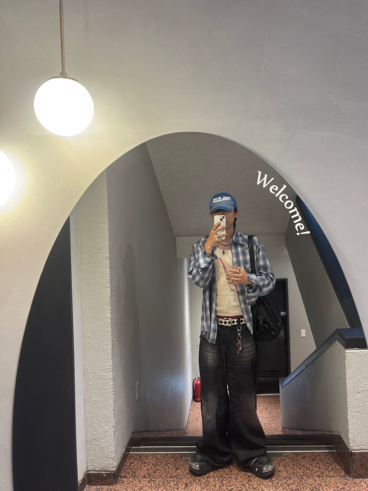
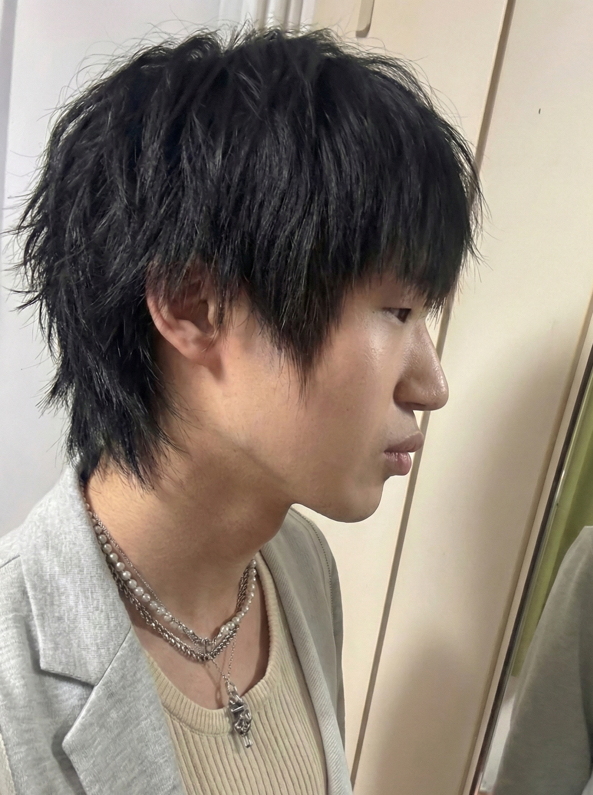
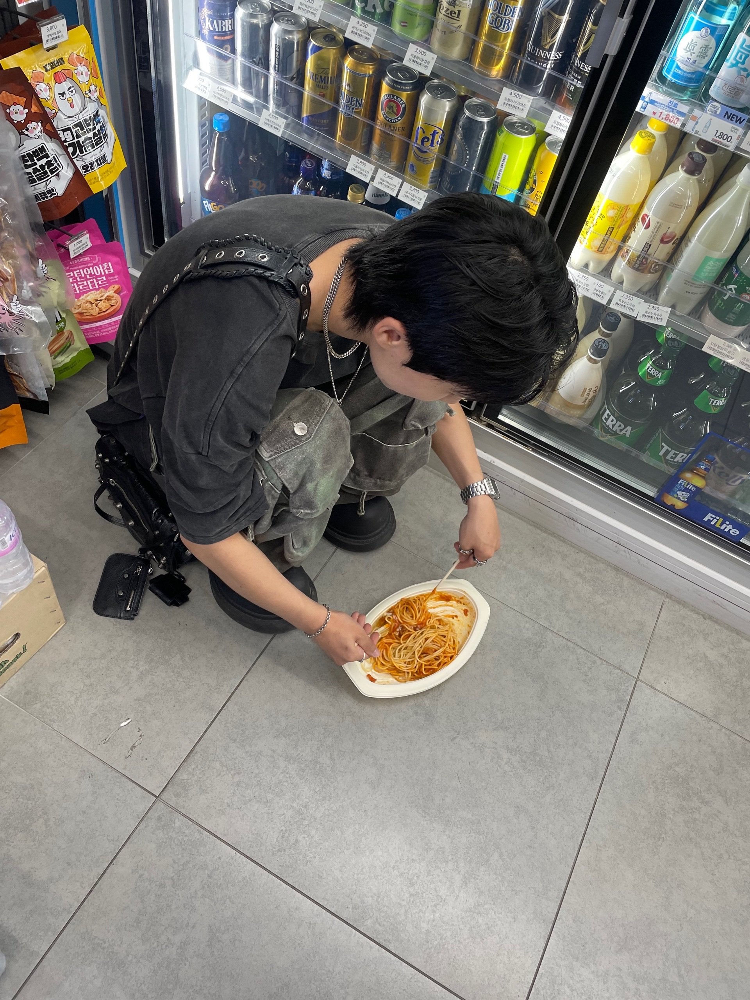
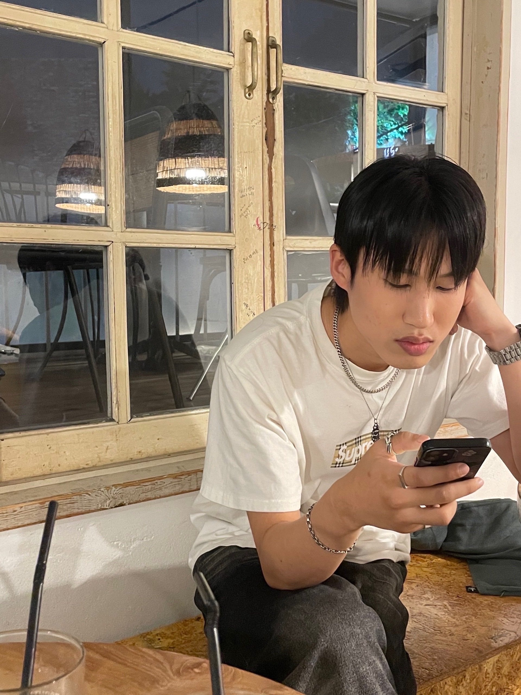
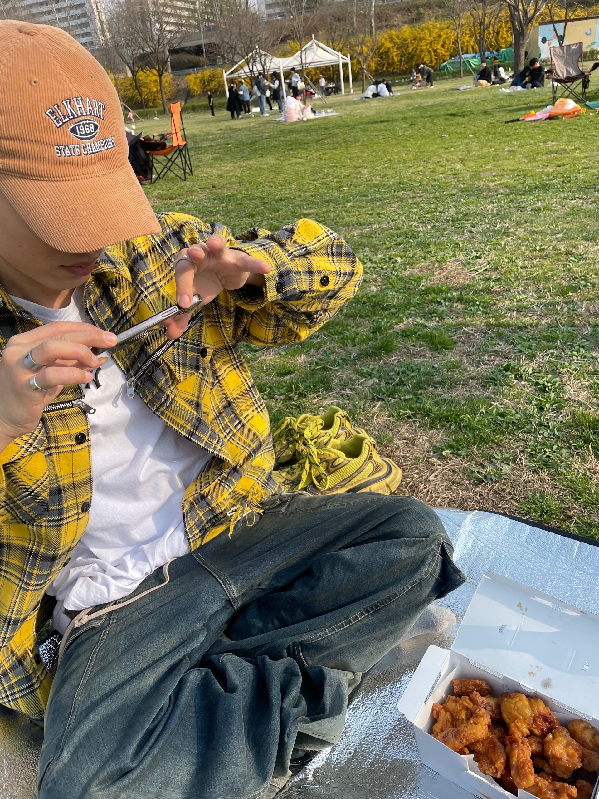

안녕하세요.
처음 구인글을 본 순간부터 쪽지를 보내고 싶었는데요.
일이 너무 바쁘기도 하고 인기가 무척 많으실 것 같아 이래저래 망설이다가 이렇게 편지를 쓰게 됐네요.
구인글에 어떤 사람을 원하시는지 뚜렷히 적지 않으셨던 기억이 있어요.
그래서 제가 뇸님에게 어떤 장점이 있을지 어필하기 어려울 것 같아 그냥 있는 그대로의 저를 적어볼까 합니다.
95년생 분당 거주, 분당에서 게임회사 다니는 170/62 남성입니다.
외적인 것은 무쌍에 개성이 드러나는 힙한 무드로 꾸미고 다니는 스타일입니다.
헤어스타일이나 향에도 민감한 편이라 전체적인 분위기를 맞추는 것에 신경쓰고 다녀요.
백문이불여일견이라고 글 보단 사진을 보는게 정확할테니 간단한 갤러리 형식으로 남겨봅니다.





그리고 가장 중요한 성격과 성향..에 대해서 말씀드리자면, 나이가 들면서 점점 차분해지고 집에 있는걸 선호하게 됐어요.
일이 워낙 바쁘기도 하고 대인 관계가 좁은 편이라 휴일에 약속을 잡을 일이 없다보니 잔잔하고 무던하게 홀로 지내고 있네요.
그래서 도파민 터지는 그런 자극적인 무언가를 약속드리긴 어렵지만 오래 갈 사람을 찾고 계신다면 제가 이 점은 뇸님에게 어필 할 수 있지 않을까 생각해요.
Mbti는 일 할 땐 entp 혼자 있을 땐 infp인 것 같아요.
좋아하는 사람에게 꾸준히 연락하는 것, 가끔 시나 편지를 쓰는 걸 좋아해요.
연인 관계에 있어서 신뢰(===연락), 말 보단 행동, 배려, 노력이라는 키워드를 가치관으로 두고 있습니다.
가끔 블로그에 글을 남기기도 하는데 따로 여쭤보시면 알려드릴게요.
부끄럽지만 성향에 대해서도 적어보자면 가슴.. 그 중에서도 큰 가슴을 아주 좋아합니다.
쪽지를 보냈던 모든 남자들이 당연히 똑같은 얘기를 했을테니 식상한 대답이 될까 걱정이 큰데요..😅
야동을 볼 때도 항상 큰 가슴, 그 중에서도 수유물..만 보다 보니 이런 취향을 가진 여성 분이 글을 썼다는 사실 만으로 큰 관능을 느꼈던 것 같아요.
본능적으로 모성애가 느껴지는 분위기에 끌리는건 저의 유년 시절과도 연관이 있겠지만 아무튼 아직까지 모성애에 대한 집착이 있나봐요.
배신하지 않는 한결 같음, 순종적인, 따뜻한, 부드러움, 아늑함, 안정감, 쉼터가 되는 등 매우 긍정적이고 무의식 단계에서 원하는 심리학적인 이유가 있을거라 생각합니다.
하지만 현재 성향은 디그레이더, 헌터, 스팽커, 사디스트 이렇게 있는 것 같아요.
살면서 제가 누군가에게 기대기보단 믿음직스러운 남자가 되고 싶다는 마음이 컸기에 이렇게 된 것 같습니다.
그래서 양가적인 감정이 제 안에 있는 것 같아요.
누군가를 만나는 것의 멋진 점은 서로가 긍정적인 영향을 주고 받으면서 점점 서로에게 맞는 사람으로 변한다는 점 같아요.
그런 인간적인 기대도 뇸님의 짧은 글에서 어렴풋이 느끼지 않았을까 싶습니다.
아무튼 독립적이고 혼자서 버티며 지내고 있지만 한 편으론 전형적인 여성상을 원하는 그런 사람으로 정리할 수 있겠네요.
쉽게 사랑에 빠지는 성격도 아니고 사람을 잘 안 믿는 편이지만 그만큼 한 사람에게 빠졌을 때 정말 헌신하고 노력하는 사람입니다.
진부하지만 있는 그대로의 저를 소개한 이 편지가 뇸님의 마음에 와닿았길 바라면서 글을 마무리할게요.
읽어주셔서 감사하고 굳이 답장이 안오더라도 뇸님이 따뜻한 봄을 맞이하시길 바랄게요..!
[ Link ]